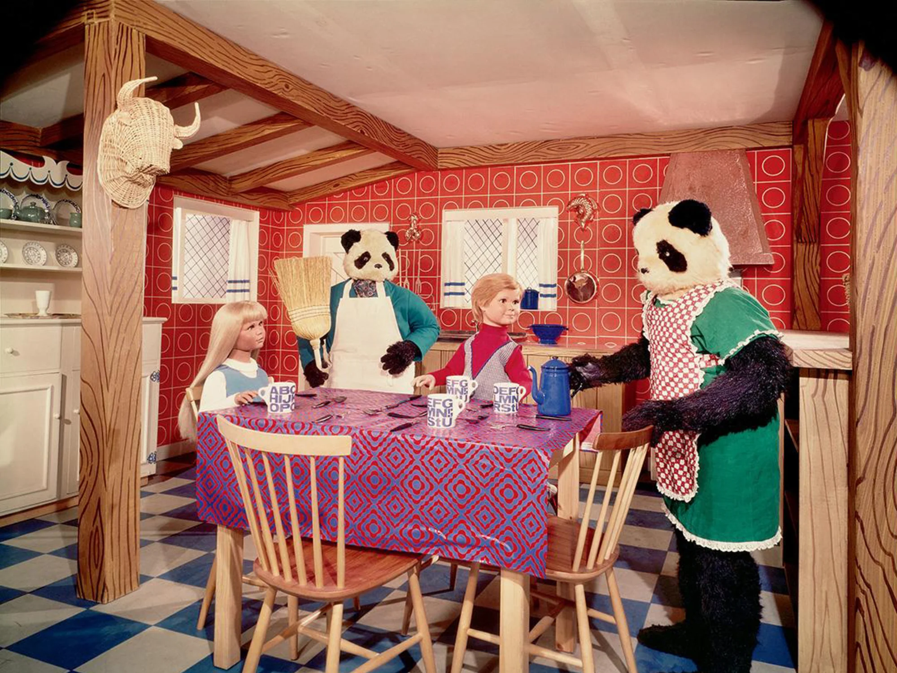
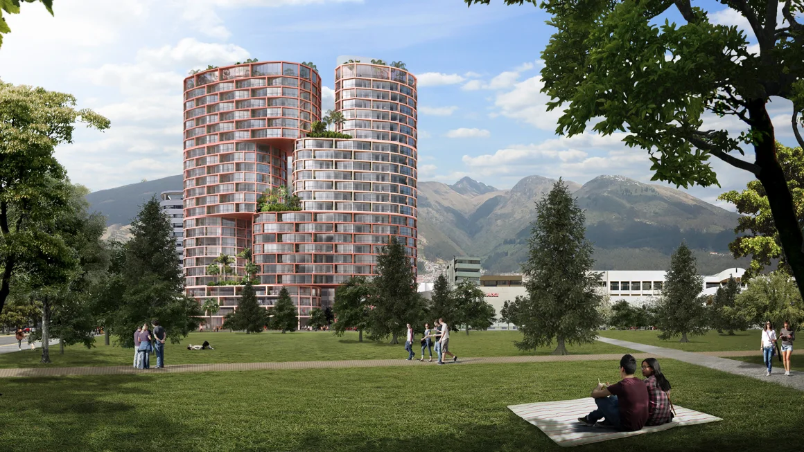

NOVOSTI
Sven-Göran Eriksson: Former England manager says he has ‘about a year’ to live as he confirms cancer diagnosis
Former England manager Sven-Göran Eriksson has publicly revealed he has terminal cancer and has “about a year” to live, the 75-year-old told Swedish radio station P1 on Thursday. More ...
US tennis star Ben Shelton doesn’t want to ‘put a ceiling’ on what he can achieve
About this time last year, Ben Shelton was an up-and-coming tennis player taking his first-ever trip outside the United States. More ...

‘A borderline horror show.’ Uncovering a 1967 kids comic that was nearly lost with its maker
To immerse yourself in the pages of new book “Candy, Andy & The Bearandas” is to delve into a surreal world that riffs on the peculiar while invoking the familiar. More ...
The 1920s painter who hid sapphic symbols in her portraits
Marie Laurencin’s gauzy paintings have lived double lives over the past century. Rendered in soft pinks and grays, the French artist’s slender, sensuous figures were long viewed as coquettish and one-dimensional, despite the success she experienced in her lifetime. More ...

The new architecture set to shape the world in 2024
The past year in architecture may be remembered for superlatives after India opened the world’s largest office building and Malaysia’s Merdeka 118 became the second tallest skyscraper ever constructed. More ...